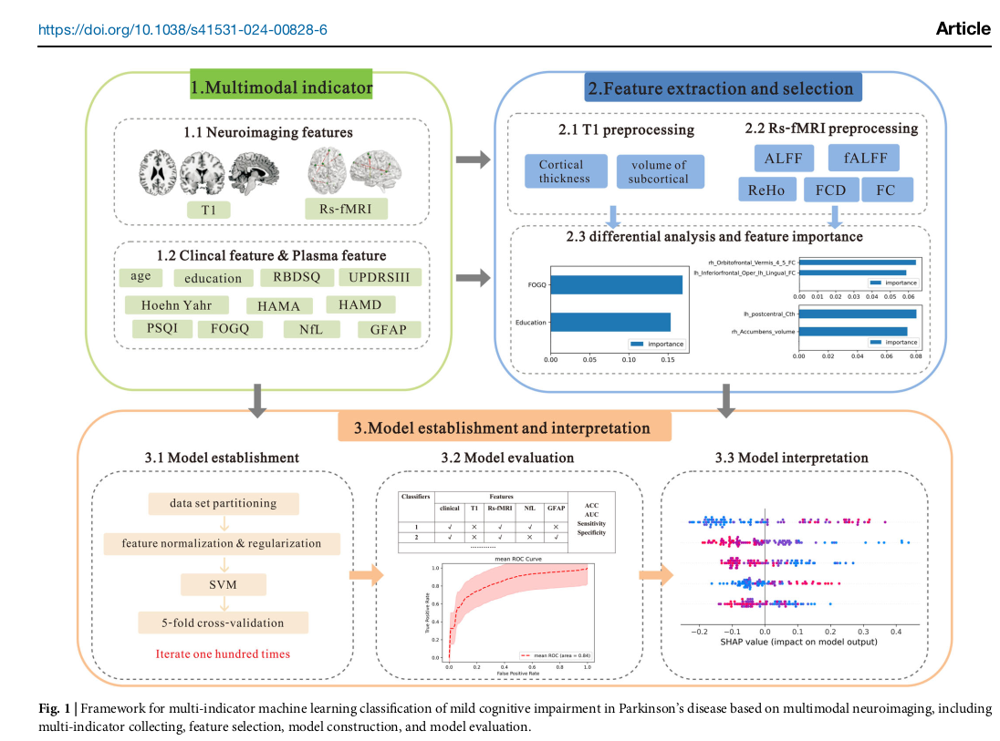
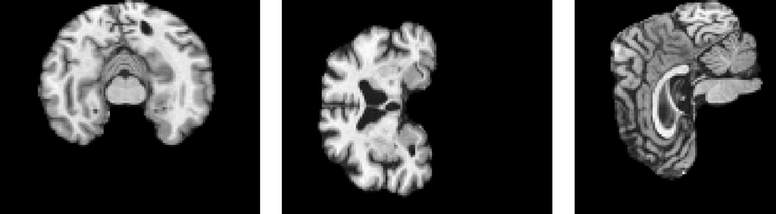
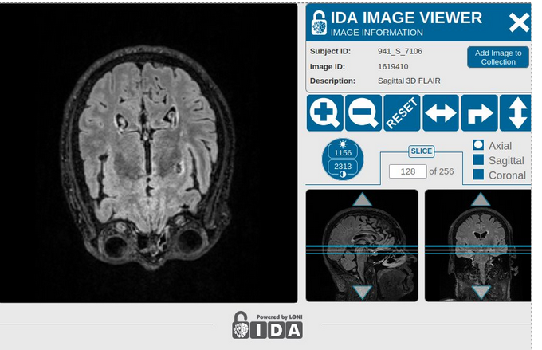
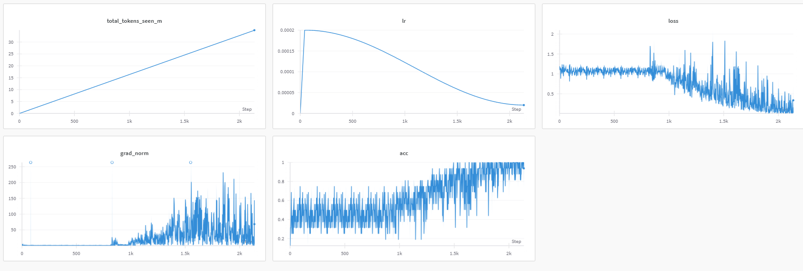
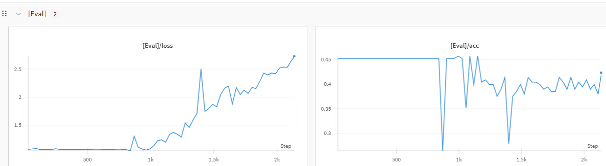

Early diagnosis of neurological diseases like Alzheimer's improves treatment outcomes and reduces long-term impact.
Since real-world diagnosis is multi-modal, we propose using such an approach for improved detection, inspired by recent
cardiovascular disease research. We believe using a multi-input model like 4M will yield more accurate results in
Alzheimer's prediction.
Baseline Models
3D CNNSVMBenchmarks
The paper titled "Multimodal neuroimaging-based prediction of Parkinson's disease with mild cognitive impairment
using machine learning technique" explores how machine learning can predict mild cognitive impairment
in Parkinson's disease patients by integrating multiple data types.
However, aside from the actual disease, its architecture also differs substantially from our experimental design.
While the paper proposes an SVM model that requires handcrafted, domain-specific feature extraction, we use a
modified Transformer encoder that relies solely on end-to-end modeling.

Figure 1: Previous approach using SVM for multimodal neuroimaging prediction
Our baseline model is based on the work of Nhan and Nam, who proposed a 3D CNN architecture for Alzheimer's disease classification using structural MRI data with data augmentation techniques. Their model achieved an accuracy of 91.2 percent and an area under the curve (AUC) of 96.1 percent, demonstrating strong performance in distinguishing Alzheimer's patients from healthy controls. We use this as a reference point to evaluate the effectiveness of our proposed multi-modal Transformer-based approach.
Methodology and Data Used
ADNI DatabaseMRIPET ScansTransformer
We decided to use the ADNI database to train our model upon. The ADNI (Alzheimer's Disease Neuroimaging Initiative) database contains a plentitude of
neurological brain scans from which we formed a cohort of specically MRI and PET scans tailored to our needs.
Data Preprocessing Details
Before passing the imagery to our model, we have preprocessed it. Specifically, we have converted the dicom files into numpy array, normalized them and
rendered them more accessible and uniform for processing. We also removed all non-tissue parts from the scans (e.g. skull, etc..) and prioritized mid-brain
regions abundant with grey matter.

Figure 1: MRI preprocessing showing removal of non-tissue parts

Figure 2: Multiple slices of processed brain scans
Model Architecture
Here is a brief overview of how our encoder-only Transformer is operating:
All input images, genetic data, and clinical scores are tokenized and passed through a learnable embedding layer.
To help the model distinguish between input types, we added modality-specific embeddings, because MRI tokens can carry different identity information than PET or APOE tokens.
Our core architecture consists of stacked self-attention blocks, each containing:
A multi-head attention layer
Feed-forward layers
Residual connections
A normalization layer
We allow flexibility in configuration (depth, attention head size, MLP ratio) so the model can be tuned for performance vs. computational cost.
After being normalized and passing through two GELU layers, the pooled feature vector is converted into a category (chosen between normal, MCI and AD) by a softmax function.

Figure 3: Training performance showing loss decrease and accuracy improvement

Figure 4: Evaluation performance showing signs of overfitting
In the training dataset, the loss steadily decreased and performance improved, eventually converging toward near-perfect accuracy. However, on the evaluation dataset, we observed an increase in loss and a decline in accuracy, indicating clear signs of overfitting—likely due to the limited size of the available data. As a result, our model was unable to generalize effectivly and could not compete with our baselines
Encountered Challenges
Data LimitationsSpatial InformationInterpretability
Throughout the implementation and evaluation of our multimodal transformer-based approach, we encountered several significant challenges that impacted the overall performance and generalizability of our model. These obstacles provide valuable insights for future research in this domain.
Limited Dataset Size
The primary constraint we faced was the limited availability of high-quality, annotated neuroimaging data. Having selected a specific cohort from the ADNI database to maintain demographic and clinical homogeneity, we were restricted to working with only several hundred samples. This limitation substantially hindered our model's ability to learn robust representations across multiple modalities, as transformer architectures typically require large-scale datasets to achieve optimal performance. The scarcity of data led to overfitting issues that were evident in our evaluation metrics, despite implementing regularization techniques and data augmentation strategies.
Spatial Information Representation
A critical technical challenge we identified was the inadequacy of 2D token representations in capturing the complex spatial relationships within neuroimaging data. The flattened 2D tokens failed to preserve the crucial three-dimensional structural information that is essential for accurate Alzheimer's disease classification. We hypothesize that implementing 3D customized Vector-Quantized Variational Autoencoder (VQ-VAE) tokens would significantly enhance the model's ability to extract and utilize spatial features, potentially leading to substantial improvements in diagnostic accuracy.
Model Interpretability
The interpretability of transformer models presents a substantial challenge compared to more classical machine learning approaches. While our model demonstrated the ability to process multimodal inputs, the attention mechanisms and learned representations remain largely opaque "black boxes." This lack of interpretability poses significant barriers to clinical adoption, as healthcare professionals require transparent reasoning behind diagnostic suggestions. Future work should focus on developing visualization techniques and attribution methods specifically tailored to transformer-based medical image analysis to bridge this gap between performance and explainability.
Conclusion
In conclusion, our modified Transformer encoder aimed to integrate MRI, PET, genetic, and clinical data within a unified attention-based framework, offering a flexible alternative to traditional convolutional approaches. However, its performance was lower than expected, likely due to the limited size of the available dataset, which constrained the model's ability to learn meaningful multi-modal representations. These findings underscore the importance of larger, high-quality datasets for developing effective attention-based diagnostic models and suggest that, with more data, this approach may still hold promise for complex biomedical tasks like Alzheimer's disease diagnosis.
References
Y. Zhu, F. Wang, P. Ning, Y. Zh et al., "Multimodal neuroimaging-based prediction of parkinson's disease with
mild cognitive impairment using machine learning technique," NPJ Parkinson's Disease, 2024, published in partnership with
the Parkinson's Foundation.
V. T. Nhan and H. B. Nam, "3D Brain MRI Classification for Alzheimer's Diagnosis Using CNN with Data Augmentation,"
in Proceedings of the International Conference on Artificial Intelligence and Data Science (ICAIDS),
Ho Chi Minh City, Vietnam: IEEE, 2024.